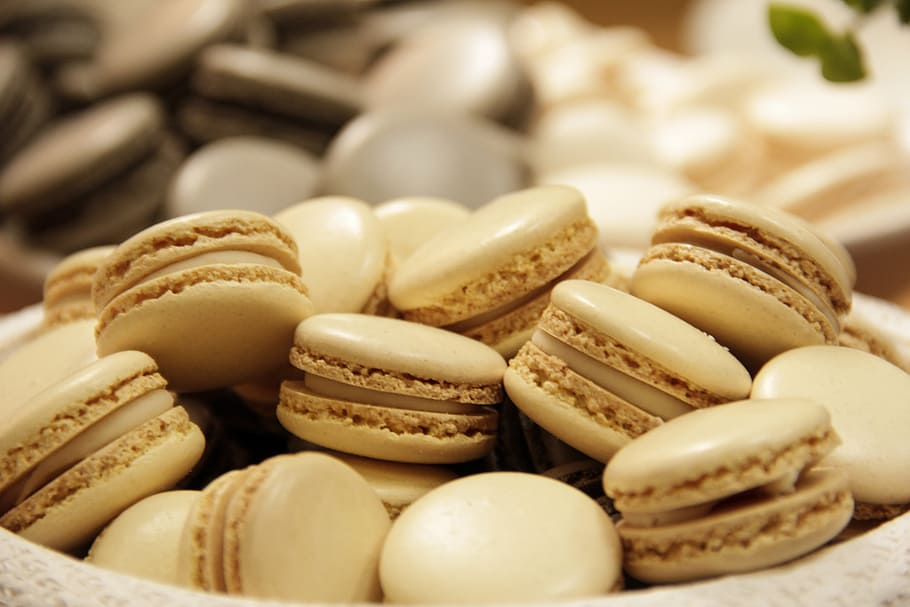

Quem somos?
Somos responsáveis por trazer receitas gostosas e fáceis de fazer em casa.
Nosso site de receitas tem como missão inspirar e capacitar pessoas a descobrirem o prazer da culinária, fornecendo uma plataforma abrangente e acessível para compartilhar e explorar uma variedade de receitas deliciosas e criativas. Queremos promover a alimentação saudável, o bem-estar e a conexão através da comida.